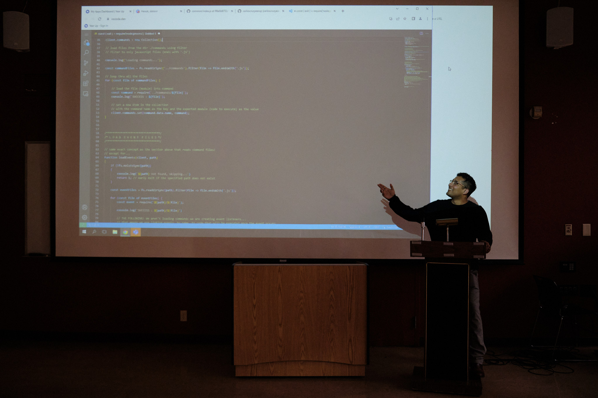

ABOUT ME
My passion is software development and I’m looking to break into a cyber security role. I'm driven by a strong desire to help others and have seen the great need for cybersecurity specialists on today's insecure web. I've refined my technical skills as a developer for years creating multiple applications using the latest technologies to expand my knowledge and experience. Previous work in customer facing roles has helped me to develop the necessary skills to be successful in a professional environment. I possess sharp technical and interpersonal skills, that will allow me to succeed as a software developer specializing in cybersecurity.
SKILLS
- C++
- C#
- HTML5
- JavaScript
- CSS
- Software Development Life Cycle (SDLC)
- Lua
- Bash
- Git
- SQL
- Linux System Administration
- Project Coordination
- Python
- Software Testing
- Vim
- GitHub
·
·
·
·
·
·
·
·
·
·
·
·
·
·
·
ELEVATOR PITCH
PUBLIC SPEAKING

SKILLS DEMO
CODING

RESUME
Carlos Cruz
(206)954-3931 • 373carloscruz@gmail.com • Greater Seattle, WA
LinkedIn | GitHub
RELEVANT SKILLS
• Microsoft Office Suite
• Office 365
• Zoom
• C++, C#, Java
• JavaScript, Python, Lua, BASH
• HTML / CSS
• SQL
• GitHub
• Linux Systems Administration
• Software Development Life Cycle
• Project Coordination
• Customer Service
• Business Communication
• Public Speaking
• Software Testing
EXPERIENCE
Kemper Development Company, Bellevue, WA April 2022 – Present
Maintenance Technician
• Plan material requisitions and consumption to limit the amount of wasted material so far reducing wasted product by 25%
• Protect sensitive surfaces with drop clothes, masking paper or tape in preparation for painting
• Prepare surfaces for painting using power/hand tools
Beresford Enterprises, Woodinville, WA January 2021 – April 2022
Carpenter/General Labor
• Constructed efficiency multipliers that eased the transportation of materials weighing up to 3 tons
• Coordinated the maintenance and repair of regulated safety structures, resulting in 0 fall accidents during my entire tenure at the company
• Maintained a clean and safe working environment
EDUCATION
Year Up / Seattle Central College, Seattle, WA March 2022 – Present
Year Up is an intensive, competitive technical training and career development program. The program includes college-level courses, professional training and a six-month internship.
• Completed coursework in Software Development and Testing, Project Management, and Business Communications, with specialized training in Application Development, including HTML, CSS, and JavaScript
• Professional of the week
CERTIFICATIONS AND TRAINING
Property & Casualty Insurance Producer’s License – 2016
Life Insurance Producer’s License – 2018
PDF VERSION